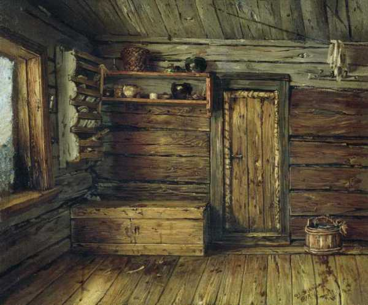
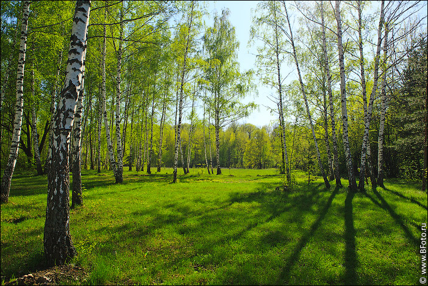

- Чипцирип! Чипцирип! Смотри, идет снег! Зима пришла!
Два воробья радостно прыгают на елке. У корня елки - домик Белого Мехового кролика.
- Пришла зима ?! Зайчик затрепетал ушами в окно. Какое чудо! Скоро наш лес будет одет в шубу цвета моей меха. Я знаю, почему зима выбирает этот цвет.
- Зачем? - спрашивают воробьи.
«Потому что зима так меня любит». Больше, чем у других животных.
«У вас нет скромности», - сердито сказали воробьи. Ты хвастун. Другими словами, бабушка Винтер была в белом халате еще до того, как вы, кролики, появились на свете! И если хотите знать - Зима нас всех любит! Все!
- Да! Да! К двум воробьям присоединяется красная белка. Это так! Зима нас всех любит!
«Хорошо, - сказал кролик. Я ничего не говорю. И все же, шепчет он себе, он любит меня больше.
"Дорогая мамочка!" Разве не идет снег ?! Медведь Мисани выходит из двери своего логова.
- Идет снег, Мисани! Снег! радостно прыгают воробьи. Зима пришла!
- Она пришла… Кто ее пригласил? Разве он не может остаться в ее доме? Хм… Я не понимал, почему это меня усыпило… Когда там… Баба виноват. Морр, морр, морр! Придется поспать еще три месяца. Морр, морр, морр…
Мишани тоже удаляется в логово, но через несколько мгновений возвращается:
- Ты слышишь ?! Он крикнул.
"Кому ты звонишь, Мисани?" - спрашивают воробьи.
«Ты», - отвечает медведь. У меня есть запрос. Как только наступит весна, разбуди меня! Не дай мне спать.
"Почему спишь так долго, Мисани?" Разве вы и остальные не можете спать только по ночам? Скоро придет Санта с подарками. Это будет так красиво.
- Э ... Я бы хотел ... Но не могу. Если я не сплю, я буду голодать. Моя бабушка прячет мою еду подо льдом, под снегом. Старуха меня не любит. Он меня не любит…
Когда сплю - мне снится, что лес полон клубники. А время идет… Не забудь меня разбудить… Пожалуйста!
«Мы разбудим тебя, Мисани», - обещают воробьи и затем летают на ветвях своих елок.
Зима приносит в лес снег и много света. Жеванные и пушистые хлопья падают целыми днями. Все ждут Рождества. Приближается Рождество, и лес полон шума и веселья. Санта раздает подарки.
«Этот кувшин с медом, - говорит он, роясь в мешке, - как вы думаете, для кого он?»
- Для меня! - закричал барсук.
- Это мое! Рыжая лиса попадает в старика. Кстати… я никогда не любила мед. «Пусть его заберет барсук», - решает она.
«Этот кувшин, - улыбается старик, - предназначен для Мисани». В такой день нельзя забывать никого. Ни один. Никто.
- У Мисани есть друзья? - спрашивает старик.
- Оно имеет! К старику подходят воробьи, белка и кролик. Мы его друзья.
«Молодец», - погладил глаза старик. Принеси ему мед. Когда он проснется, скажите ему, что он из Санты и ему повезло с такими друзьями.
После праздников лес выглядит безлюдным. Все отдыхают. Зайка редко высовывает уши в окно. На дереве сонно дремлют воробьи. Белка грызет орехи в своей комнатке. Иногда веселая и в хорошем настроении она прыгает с ветки на ветку, наблюдая за тряской снега.
«Я знаю, почему зима укрывает землю снежным покрывалом!» крикнула она.
- Зачем? - скучно спрашивают воробьи.
"Чтобы согреть его!" Как Мисани - Земля спит три месяца. Там, под пуховым одеялом, лежит трава, лежит попкорн, который весной прорастет. Зимой боится, что мороз их всех заморозит.
«Мороз не жалеет», - вздохнули воробьи. Когда наступит весна?
- Не скоро… Зима только начинается. И белка входит в дупло, чтобы грызть орехи.
Дни короткие, ночи длинные, погода тяжелая. Однако однажды Зима снимает свои белые простыни и уходит. Какая радость!
- Чипцирип! Cipcirip! Весна здесь!
С приходом весны лес оживает. Работа кипит везде. Воробьи спешат построить новый дом. Соберите веточки, пряди сухой травы, склейте их и домик готов.
- Но где Мисани? Он помнит белку.
- Аолеу! Я забыл! Встряхните воробьев.
- Чипцирип! Cipcirip! Они бегут в дом плюшевого мишки. Просыпайся, Мисани! Весна здесь!

В берлоге нет движения.
«Она не просыпается», - вздохнул воробей.
«Что-то могло случиться с ней», - сказал другой.
«Мы должны пойти и посмотреть», - предлагает белка.
Воздух в комнате, где спит Мизани, такой душный, такой твердый, что все трое теряют сознание.
- Давайте окна откроем! - крикнула белка. Проветриваем, впускаем свет!
«Слава богу, он жив». Какой здесь беспорядок
И воробьи вместе с белкой, к которым присоединяется White Fur, сразу же приступают к работе. За короткое время дом Мисани неузнаваем. На свежеокрашенных стенах белочка рисует клубники клубники. Старые занавески заменяются новыми, розовыми, с разноцветными пчелами и бабочками. Пол вымыт и застелен мягкими ковриками. У стены длинный стул, покрытый полосой всех цветов. Больше нечего делать. Друзья садятся на стул и ждут, пока Мисани проснется.
- Просыпайся, Мисани! Просыпайся! Воробьи теряют самообладание. Весна здесь! Нет времени спать!
- Вы знаете что-нибудь? Говорит воробей. Я собираюсь пощекотать ему ноги. Глазки сделает сразу.
«Привет», - улыбается кролик из-под усов. Иди ... Лапа Мисани и думает, что ему некому откладывать яйца.
- Затем? Что делать? Если подождать, пока он проснется добровольно - зимой он нас ловит.
«Не сердись», - советует белка. Теперь разбудим его. Принеси кувшин с медом от Деда Мороза! Ставьте самовар. Аромат меда с медом - Мисани не устоит.
Чайный пар наполняет всю комнату.

«Какой приятный запах», - Мисани открыла один глаз. Пахнет весной. Ой! Не так ли? Он пришел? Он испуганно выпрыгивает из духовки.
- Это здесь, это здесь! Если вы еще спите, весна уходит незаметно, - шутит кролик.
Мисани выходит за дверь логова. Он вытягивает лапы, дышит всеми легкими. Лес почти зеленый. Везде цветы, жужжание пчел, щебетание птиц. Небо голубое, солнышко счастливое.
- Какая чудесная весна, Мисани возвращается к своим друзьям. По этому поводу неплохо было бы повеселиться! Я голоден как волк! Затем, заметив кувшин с медом, он подносит его ко рту и не останавливается, пока не находит дно. Незаметно крадутся воробьи, зайчик и белка.
- Фу… Я его разбудил, воробьи веселятся. А теперь за работу! Не время веселья! Весенний день год кормит!
|
Таблица состояния персонажей |
Персонаж |
Состояние |
Время года |
|---|---|---|
|
Воробей |
Спит на ели |
Зима |
|
Будит Мишани |
Весна |
|
|
Заяц |
Редко выглядвывает на улицу |
Зима |
|
Будит Мишани |
Весна |
|
|
Мишани |
Спит |
Зима |
|
Просыпается |
Весна |
|
|
Дед Мороз |
Дарит подарки |
Зима |
|
Отдыхает |
Весна |
|
|
Белка |
Грызёт орехи |
Зима |
|
Будит Мишани |
Весна |
|